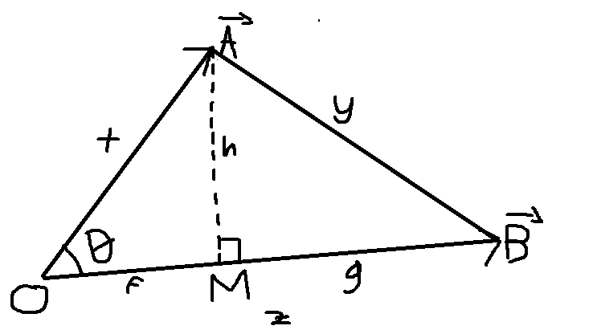

Proof that $\text{dot}(A, B) = |A||B|cos(\\theta)$
Dot products
Suppose there are two vectors $A$ and $B$ that is equal to: $$A = (a_1, a_2, ..., a_n)$$ $$B = (b_1, b_2, ..., b_n)$$ Then the dot product is: $$A \cdot B = a_1b_1 + a_2b_2 + ... + a_nb_n = \sum_{i=1}^{n}a_ib_i$$ There is another inrepretation of the dot product that is a lot more intuitive and that is: $$A \cdot B = |A||B|cos(\theta)$$ where $\theta$ is the angle between $A$ and $B$ and $|A|$ is the magnitude of any vector $A$, which is: $$|A| = \sqrt{\sum_{i=1}^{n}a_i}$$
As a side story, in the middle of writing this, I actually forgot how the proof for this goes. I remember that I have managed to prove it before but I forgot how it went and I kinda panicked. Now I remember though, so here's how the proof goes:
A and B are vectors in n-dimensional euclidean space. Imagine taking a 2-dimensional slice of that space which contains A, B and the origin. Now you can draw A and B in 2 dimensions as follows:
But remember, A and B are still n-dimensional vectors. Even though we have visualized them like this representing their position in the plane slice, it does not mean that A and B are now 2 dimensional vectors in a way where we can actually represent each with their x and y coordinates. So, the only information we know are the magnitude of these vectors
Also, this is actually just 1 possibility, that is a possibility where the vector A is still technically in the same general direction as B and the result of the projection is still on B, which may not always be the case. In the actual behaviour of dot products, it will return a negative value when the vector is pointing on "opposite directions," (which is in line with how the cosine of a rotation higher than 90 is negative) in other words, M is a B multiplied by a negative scalar. The proof we're going with only covers this case at first, but we'll see how it can still be used the prove the other case at the end.
We know the value of $AO$, $BO$, and $AB$ by taking the magnitude of the difference of the vectors A and B.
By the definition of cosine, it is known that: $$cos(\theta) = \frac{MO}{AO} = \frac{MO}{|\vec{A}|}$$
substituting that into the previous definition interpretation of dot products, this means that we just need to prove that the dot product of A and B is:
$$A \cdot B = |\vec{A}||\vec{B}|\frac{MO}{|\vec{A}|} = |\vec{B}|MO$$
And if that is the case, then it MUST mean that the dot product is equal to the magnitude of A and the magnitude of B multiplied the cosine of the angle inbetween A and B.
The problem now is finding MO, but with some annoying bit of algebra, you can find that.
Definitions based on the image:
$$x = AO, y = AB, z = BO, h = AM, f = MO, g = BM, z = f + g$$
Remember that the goal is to find $f$ using only $x,\ y,\ z$ because those are all we know.
We have 3 unknowns, f, g, h and we have 3 knowns.
The strategy is to create 3 equations and then solve for f, g, and h. The first two equations will be made using Pythagoras:
$$
\begin{align}
h^2 &= x^2 - f^2 & \text{(1)} \\
h^2 &= y^2 - g^2 & \text{(2)} \\
z &= f + g & \text{(3)}
\end{align}
$$
Using (1) and (2) you can find:
$$
\begin{align}
f &= \sqrt{x^2 - h^2} & \text{(4)} \\
g &= \sqrt{y^2 - h^2} & \text{(5)}
\end{align}
$$
And then using (4), (5), and (3):
$$
\begin{align}
z &= \sqrt{x^2 - h^2} + \sqrt{y^2 - h^2} \\
z^2 &= x^2 - h^2 + 2\sqrt{(x^2 - h^2)(y^2 - h^2)} + y^2 - h^2 \\
z^2 &= x^2 + y^2 - 2h^2 + 2\sqrt{(x^2 - h^2)(y^2 - h^2)} \\
z^2 - x^2 - y^2 + 2h^2 &= 2\sqrt{(x^2 - h^2)(y^2 - h^2)} \\
(z^2 - x^2 - y^2 + 2h^2)^2 &= 4((x^2 - h^2)(y^2 - h^2))
\end{align}
$$
Yeah, this is gonna get very messy but here goes, the left part first:
$$
z^4 + x^4 + y^4 + 4h^4 - 2x^2z^2 - 2y^2z^2 + 4h^2z^2 + 2x^2y^2 - 4x^2h^2 - 4y^2h^2
$$
The right part:
$$
4(x^2y^2 - h^2(x^2 + y^2) + h^4)
$$
Notice that the end of the expansion of the left side contains a $$ -4h^2(x^2 + y^2) $$ which is also contained on the expansion on the right side, so that part can be safely excluded. Notice that $4h^4$ is also included on both sides so that can also be excluded.
$$
\begin{align}
z^4 + x^4 + y^4 - 2x^2z^2 - 2y^2z^2 + 4h^2z^2 + 2x^2y^2 &= 4x^2y^2 \\
(x^2 + y^2 - z^2)^2 + 4h^2z^2 &= 4x^2y^2 \\
h^2 &= \frac{4x^2y^2 - (x^2 + y^2 - z^2)^2}{4z^2} \\
h &= \frac{\sqrt{4x^2y^2 - (x^2 + y^2 - z^2)^2}}{2z} \\
\end{align}$$
Which is actually correct! Check out this desmos link.
That was still really annoying though.
This is just one of those things anyone that knows a bit of algebra could do but it's also really tedious.
Next is to find what OM is. This can be done using Pythagoras again:
$$
\begin{align}
f^2 &= x^2 - h^2 \\
f^2 &= \frac{4x^2z^2 - 4x^2y^2 + (x^2 + y^2 - z^2)^2}{4z^2} \\
f^2 &= \frac{4x^2z^2 - 4x^2y^2 + (z^4 + x^4 + y^4 - 2x^2z^2 - 2y^2z^2 + 2x^2y^2)}{4z^2} \\
f^2 &= \frac{2x^2z^2 - 2x^2y^2 + z^4 + x^4 + y^4 - 2y^2z^2}{4z^2} \\
f^2 &= \frac{(x^2 - y^2 + z^2)^2}{4z^2} \\
f &= \frac{(x^2 - y^2 + z^2)}{2z}
\end{align}
$$
Again, it's correct. Check desmos link
Now to prove that:
$$
A \cdot B = zf = \frac{(x^2 - y^2 + z^2)}{2}
$$
It is known that:
$$
\begin{align}
A \cdot B = \sum_{i=1}^{n} a_ib_i \\
x = |\vec{A}| = \sqrt{\sum_{i=1}^{n} a_i^2} \\
z = |\vec{B}| = \sqrt{\sum_{i=1}^{n} b_i^2} \\
y = |\vec{B - A}| = \sqrt{\sum_{i=1}^{n} (b_i - a_i)^2}
\end{align}
$$
Going back to zf using the sums:
$$
\begin{align}
zf &= \frac{\sum_{i=1}^{n} a_i^2 - \sum_{i=1}^{n} (b_i - a_i)^2 + \sum_{i=1}^{n} b_i^2}{2} \\
zf &= \frac{\sum_{i=1}^{n} (a_i^2 - (b_i - a_i)^2 + b_i^2)}{2} \\
zf &= \frac{\sum_{i=1}^{n} (a_i^2 - (b_i^2 - 2a_ib_i + a_i^2) + b_i^2)}{2} \\
zf &= \frac{\sum_{i=1}^{n} (a_i^2 - b_i^2 + 2a_ib_i - a_i^2 + b_i^2)}{2} \\
zf &= \frac{\sum_{i=1}^{n} 2a_ib_i}{2} \\
zf &= \sum_{i=1}^{n} a_ib_i = A \cdot B
\end{align}
$$
And there we go, we have proved that the dot product of A is equal to zf or the length of the result of the projection from A to B times the magnitude of B
And earlier, we have proved that if that is true, then the dot product MUST be equal to the magnitude of A times the magnitude of B times the cosine of the angle between them
I'm still quite surprised that the result ended up being the exact same as the dot product though lol. I really expected it to be something different because we have technically only proved it for 1 case out of two.
Next time, I'll investigate more into why this proof actually also works for the other cases. Check this desmos link and move A to B so that they're in opposite directions and see that the resulting F is negative.
There are two more possible cases that needs to be covered in here. First is the case where A and B is still on the same general direction, that is both goes to the positive or negative x-axis in the plane slice visualization, but A projected onto B would result in a point that is outside of B. Second is the case where A and B are pointing in general opposite directions. The strategy for doing this is to once again model it using a system of equations while knowing what we need to solve in order to reach the goal, and then notice that the resulting modeled system of equations is the exact same as before, meaning the result is going to be the exact same for both of these cases.
Vector projections
Suppose there's the vector A and B, and we want to project A to B and denote the result M, as shown in the image below (excuse my bad drawing, yes I drew that manually for some reason.):

The goal here is to find the vector M.
Definitions: $$|\vec{A}| = AO, |\vec{M}| = MO$$ Observation: $$cos(\theta) = \frac{MO}{AO} = \frac{|\vec{M}|}{|\vec{A}|}$$
Which, by doing a bit of algebra on the previous expression, means: $$|\vec{M}| = |\vec{A}|cos(\theta)$$
We know that: $$\vec{M} = \frac{\vec{B}}{|\vec{B}|}|\vec{M}| = \frac{\vec{B}}{|\vec{B}|}|\vec{A}|cos(\theta)$$
But then, using dot products, we know:
$$A \cdot B = |\vec{A}||\vec{B}|cos(\theta)$$
Which means:
$$\frac{\vec{B}}{|\vec{B}|}|\vec{A}|cos(\theta) = \frac{A \cdot B}{|\vec{B}|^2}\vec{B}$$
And that is the formula to get the projection vector when projecting from A to B